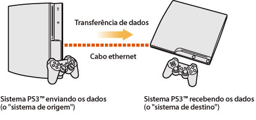
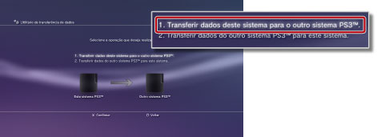
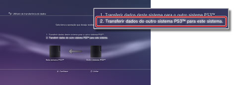

Configurações > Configurações do sistema > Utilitário de transferência de dados
Utilitário de transferência de dados
Agora, você pode transferir (copiar ou mover) dados que estão salvos no armazenamento de um sistema PS3™ para o armazenamento de outro sistema PS3™ usando um cabo Ethernet.

Avisos
- Quando realizar esta operação, todos os dados armazenados no sistema PS3™ que receberá os dados (o "sistema de destino") serão excluídos.
- Os dados excluídos não poderão ser restaurados, portanto tome cuidado para não excluir acidentalmente dados importantes. A perda ou corrompimento de dados é de responsabilidade do usuário.
- Alguns tipos de dados podem não ser transferíveis. Clique aqui para detalhes.
Preparando os sistemas para a transferência de dados
Antes de iniciar a operação de transferência de dados, você deve realizar as seguintes etapas.
1. |
Atualize o software de sistema para a versão mais atual em ambos os sistemas PS3™. |
|---|---|
2. |
Prepare o sistema PS3™ que enviará os dados (o "sistema de origem"). |
- Crie uma conta Sony Entertainment Network se um usuário não possuir uma conta.
- - Selecione
 (PlayStation™Network) >
(PlayStation™Network) >  (Inscreva-se), e então siga as instruções na tela para criar uma conta.
(Inscreva-se), e então siga as instruções na tela para criar uma conta. - Desative o sistema PS3™ se os dados a serem transferidos contiverem conteúdo comprado de PlayStation®Store.
- - Selecione (PlayStation™Network) >
 (Gerenciamento da conta) >
(Gerenciamento da conta) >  (Ativação do sistema).
(Ativação do sistema). - Faça backup, ou "sincronize", as informações de troféus do sistema PS3™ com o servidor da PSNSM se deseja transferi-las.
- - Inicie a sessão na PSNSM e, então, selecione (PlayStation™Network) >
 (Coleção de troféus).
(Coleção de troféus). - Faça backup de suas informações de perfil e fases criadas no LittleBigPlanet™ para seu jogo salvo. Você poderá utilizar os dados salvos quando jogar LittleBigPlanet™ no sistema PS3™ de destino.
Atenção
As seguintes restrições se aplicam se você realizar a operação de transferência de dados sem criar uma conta.
- Você pode não ser capaz de utilizar os dados salvos no sistema PS3™ de destino.
- Você pode não ser capaz de conquistar troféus utilizando os dados salvos transferidos.
- As informações de troféus não são transferidas.
Transferindo dados
Desligue ambos os sistemas PS3™ e execute as seguintes etapas. Se os dados transferidos forem dados de jogos salvos de cópia proibida ou protegidos por direitos autorais, eles serão movidos para o sistema PS3™ de destino e excluídos do sistema PS3™ de origem.
1. |
Utilizando um cabo Ethernet, faça uma conexão direta entre ambos os sistemas PS3™. |
|---|---|
2. |
Conecte os sistemas PS3™ aos conectores de entrada de vídeo diferentes da TV. |
3. |
Ligue a TV e, então, ligue os sistemas PS3™. |
4. |
No sistema PS3™ de origem, selecione |
5. |
Selecione [1. Transferir dados deste sistema para o outro sistema PS3™.].  Se você não completou as etapas de preparação descritas anteriormente, siga as instruções na tela para completá-las. |
6. |
Quando o sistema PS3™ estiver no modo de espera para o início da transferência de dados, utilize o controle remoto para alterar a entrada de vídeo para exibir na tela o sistema PS3™ de destino. |
7. |
No sistema PS3™ de destino, selecione |
8. |
Selecione [2. Transferir dados do outro sistema PS3™ para este sistema.]  Siga as instruções na tela para completar a operação. |
 (Configurações) >
(Configurações) >  (Configurações do sistema) > [Utilitário de transferência de dados].
(Configurações do sistema) > [Utilitário de transferência de dados].Dicas
- Após a operação de transferência de dados houver sido concluída, você poderá desligar o sistema PS3™ de origem. Selecione a TV para exibir a tela do sistema PS3™ de origem e, então, selecione
 (Usuários) >
(Usuários) >  (Desativar sistema).
(Desativar sistema). - Se o conteúdo baixado da PlayStation®Store for transferido como parte desta operação, você deverá ativar o sistema PS3™ de destino antes que possa utilizar estes dados. Inicie a sessão no sistema PS3™ como o usuário proprietário do conteúdo e selecione (PlayStation™Network) > (Gerenciamento da conta) > (Ativação do sistema) para ativar o sistema.
Limitações do utilitário de transferência de dados
Alguns tipos de dados não podem ser transferidos utilizando o utilitário de transferência de dados e alguns tipos de dados podem ser transferidos mas não podem ser reproduzidos no sistema PS3™ de destino.
Para as informações mais recentes, visite o site da SIE de sua região. Os seguintes tipos de dados não são transferíveis:
- Faixas (incluindo "pacotes de músicas") para o software SingStar™ salvos no armazenamento do sistema PS3™
- Arquivos de vídeo protegidos por direitos autorais (tipos de arquivo: MGV e ETS)
- Arquivos de vídeo compatíveis com o serviço DivX® VOD (Video On Demand)
- Os seguintes títulos de software no formato PlayStation®2, se eles estiverem instalados no armazenamento do sistema PS3™:
- - [Nobunaga's Ambition Online] e [Pacotes de Expansão]
- - [FINAL FANTASY XI] e [Discos de Expansão]
- - [SOCOM II: U.S. NAVY SEALs] e [Discos relacionados incluídos com OPM* Edição 87, OPM* Edição 88, OPM* Edição 89, OPM* Edição 90]
- - SOCOM 3: U.S. NAVY SEALs
- - SOCOM: U.S. NAVY SEALs Combined Assault
Para os tipos de dados a seguir, você deverá realizar algumas etapas adicionais após concluir a transferência dos dados para poder utilizá-los:
- GripShift™
- - Quando iniciar o jogo pela primeira vez após a operação de transferência de dados, uma mensagem de erro será exibida e você não poderá jogar. Para jogar, faça o download instale o jogo novamente.
- Dados salvos de Ghostbusters™ e Ghostbusters™: O Jogo
- - O jogo salvo não será reconhecido quando iniciar o jogo pela primeira vez após a operação de transferência de dados. Para utilizar os dados salvos, saia do jogo e inicie novamente.
| * |
PlayStation Revista Oficial |
|---|
Dica
Alguns softwares podem não ser vendidos em algumas regiões.